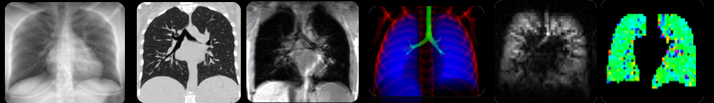

Magnetic Resonance Imaging (MRI) is a foundational modality for our research since the interest of the group involves non-invasive imaging of lungs (as opposed to CT which involves ionizing radiation). MRI is a fantastically elegant imaging modality which takes advantage of the quantum mechanical 'spin' of nuclei and its behavior in magnetic fields to produce 3D tomographic images of tissue in vivo. Every student in the PIRL must be familiar with basic NMR theory and pulse sequences.
One of the fundamental limitations of MRI is that a very small percentage of atomic nuclei actually participate in delivering a detectable NMR signal. The fration of spins which participate in the NMR phenomenon is called 'polarization' and even at the very high magnetic fields of most clinical scanners (a few Tesla), only a few spins per million contribute to the NMR signal (i.e., polarizations on order P~0.000001). However, thanks to some clever spin exchanges techniques from atomic physics, the nuclear polarization of some noble gases (3He and 129Xe) can be dramatically increased in vitro to order of P~0.1 - nearly 100,000x higher. This increase in nuclear magnetic moment is so high that even these gases can be imaged in spite of their low volume density. Further, because these are noble gases, they are chemicaly inert and can be safely inhaled by a subject in the MR scanner. During a single breathold, the gas can be imaged as it is disributed throughout the subjects lungs providing a picture of pulmonary function.
In hyperpolarized gas MRI, a subject inhales a volume of hyperpolarized gas, and the MRI scanner images the gas rather than the protons in the body (remember from chemistry that noble gasses are inert and thus don't hardly interact with anything - which is good because it won't be absorbed by the lung tissue). Now you are actually imaging the gas in the lung - a fantastic, novel idea! So why is this useful? Well, healthy lungs will allow the gas to completely flood the lung interior - no spots left unfilled. If however the lungs are not healthy, the hyperpolarized gas images demonstrate patches of the lungs where the gas cannot go. These are called ventilation defects and are a clear sign of compromised pulmonary function! Further, HP gas MRI can be used to investigate lung structure as well. For instance, emphysema is a pulmonary abnormality characterized by deterioration of alveoli and distal airways. If alveoli deteriorate, then gas can diffuse much more easily through the lungs than it could in healthy lungs. Using techniques from diffusion MRI, another exciting MRI research field, the actual gas diffusion at all points in the lung can be measured - high diffusion is bad, low diffusion is good! These are but a few examples of some of the spectacular things HP gas MRI can do to investigate, diagnose, and even aid in treatment of lungs.